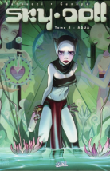
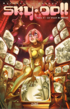
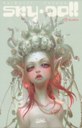
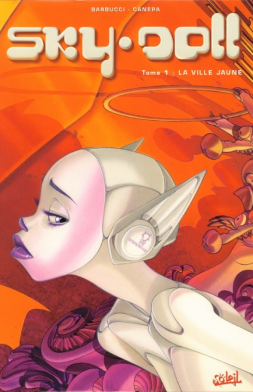
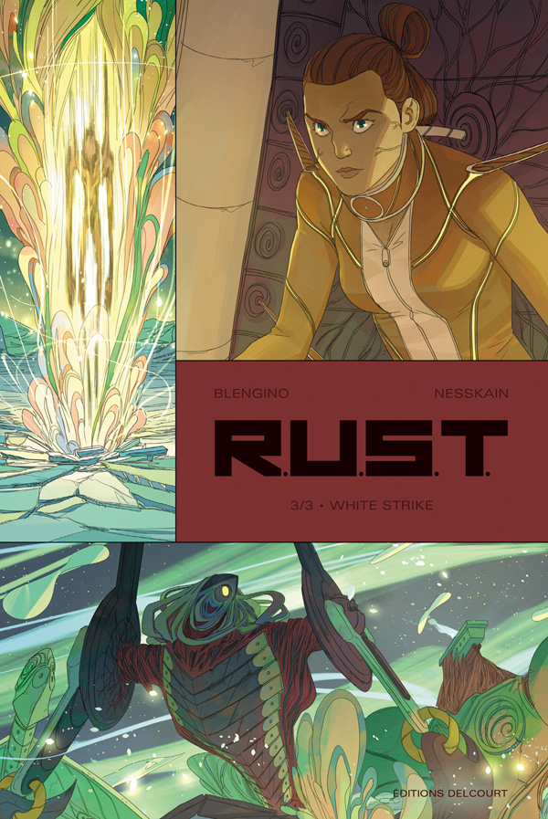
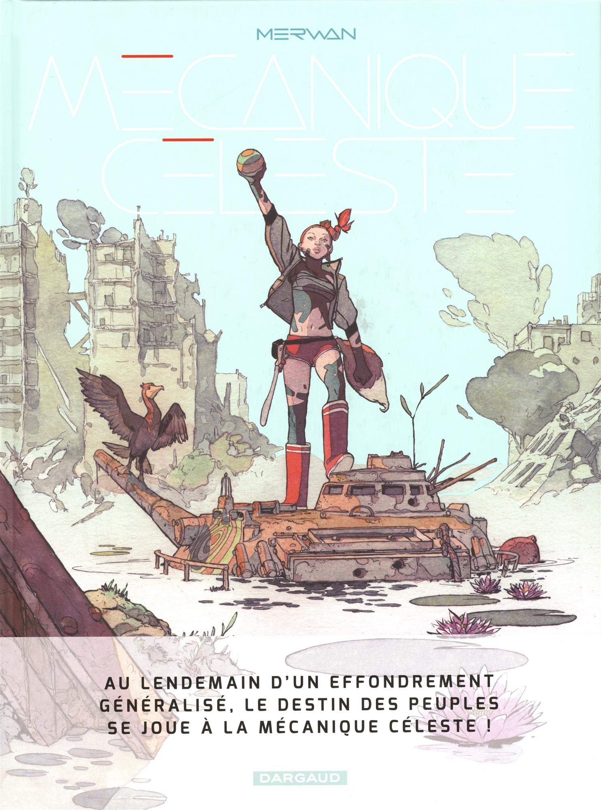
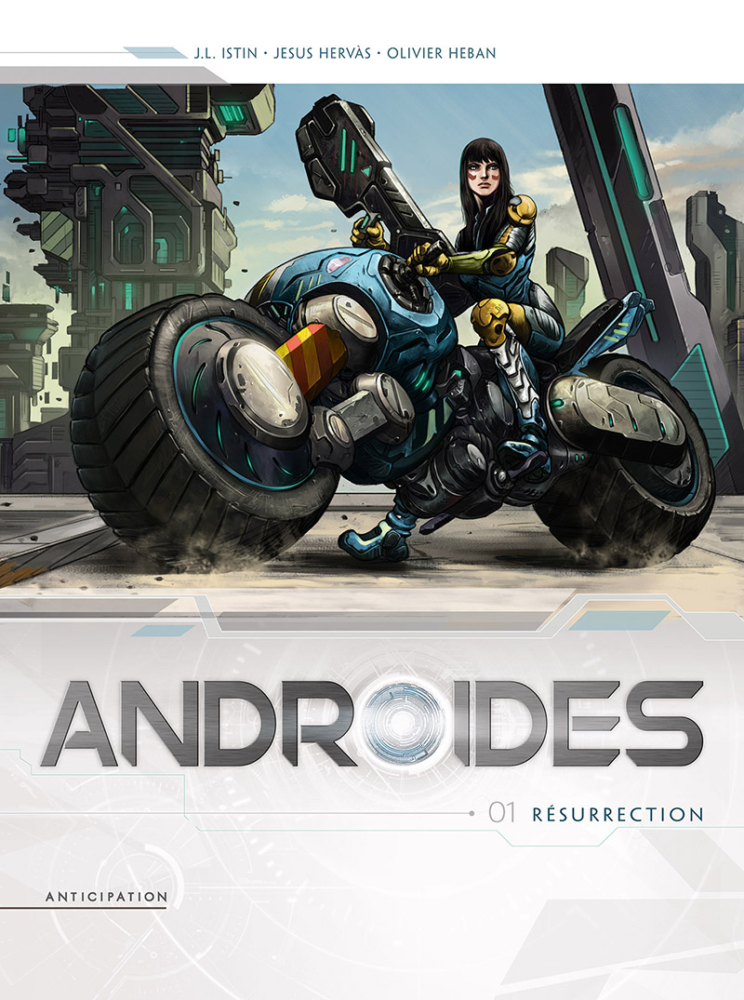
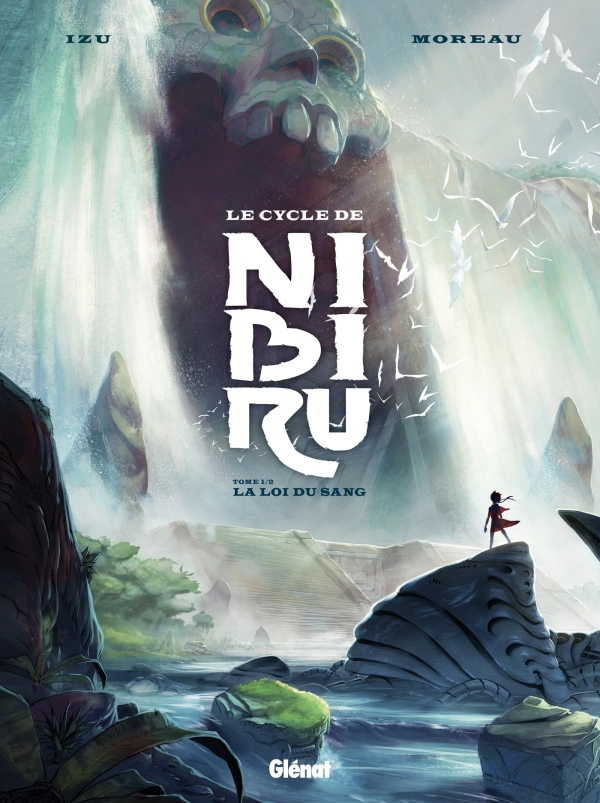

SKY DOLL
T3 : La ville blanche
Noa est une poupée qui doit être remontée toutes les trente-trois heures par une clé que détient son possesseur, ce qui fait de lui le maître de son existence. Mais Noa n'est pas comme les autres androïdes : elle est capable de rêver, et de se souvenir de ses songes. Alors que son maître, "Dieu", meurt dans d'étranges conditions, elle parvient à s'échapper en se cachant dans la soute d'un vaisseau spatial piloté par Roy et Jahu, deux envoyés de la grande Ludovique, papesse qui ...
autre tomes
   suggestions
   Alessandro Barbucci
Scénariste & Dessinateur
Barbara Canepa
Scénariste & Dessinateur
Informations sur l'album
Sky-Doll
3. La ville blanche
Scénario : Canepa, Barbara
Dessin : Barbucci, Alessandro
Couleurs : Canepa, Barbara
Dépot légal : 09/2004
Editeur : Soleil Productions
Collection : Collection 2B
ISBN : 2-84565-775-7
Pages : 104
Poster un avis
Connectez-vous pour écrire un commentaire
Iamque non umbratis fallaciis res agebatur, sed qua palatium est extra muros, armatis omne circumdedit. ingressusque obscuro iam die, ablatis regiis indumentis Caesarem tunica texit et paludamento communi, eum post haec nihil passurum velut mandato principis iurandi crebritate confirmans et statim inquit exsurge et inopinum carpento privato inpositum ad Histriam duxit prope oppidum Polam, ubi quondam peremptum Constantini filium accepimus Crispum.
Quare hoc quidem praeceptum, cuiuscumque est, ad tollendam amicitiam valet; illud potius praecipiendum fuit, ut eam diligentiam adhiberemus in amicitiis comparandis, ut ne quando amare inciperemus eum, quem aliquando odisse possemus. Quin etiam si minus felices in diligendo fuissemus, ferendum id Scipio potius quam inimicitiarum tempus cogitandum putabat.
Quid? qui se etiam nunc subsidiis patrimonii aut amicorum liberalitate sustentant, hos perire patiemur? An, si qui frui publico non potuit per hostem, hic tegitur ipsa lege censoria; quem is frui non sinit, qui est, etiamsi non appellatur, hostis, huic ferri auxilium non oportet? Retinete igitur in provincia diutius eum, qui de sociis cum hostibus, de civibus cum sociis faciat pactiones, qui hoc etiam se pluris esse quam collegam putet, quod ille vos tristia voltuque deceperit, ipse numquam se minus quam erat, nequam esse simularit. Piso autem alio quodam modo gloriatur se brevi tempore perfecisse, ne Gabinius unus omnium nequissimus existimaretur.
commentaires
Pseudo a commenté :
um apud Persas, ut supra narravimus, perfidia regis motus agitat insperatos, et in eois tractibus bella rediviva consurgunt, anno sexto decimo et eo diutius post Nepotiani exitium, saevienum apud Persas, ut supra narravimus, um apud Persas, ut supra narravimus, perfidia regis motus agitat insperatos, et in eois tractibus bellqjkzkaqnaz exitium, saevienum apud Persas, ut supra narraviz....
Pseudo a commenté :
um apud Persas, ut supra narravimus, perfidia regis motus agitat insperatos, et in eois tractibus bella rediviva consurgunt, anno sexto decimo et eo diutius post Nepotiani exitium, saevienum apud Persas, ut supra narravimus, um apud Persas, ut supra narravimus, perfidia regis motus agitat insperatos, et in eois tractibus bellqjkzkaqnaz exitium, saevienum apud Persas, ut supra narraviz....
Pseudo a commenté :
um apud Persas, ut supra narravimus, perfidia regis motus agitat insperatos, et in eois tractibus bella rediviva consurgunt, anno sexto decimo et eo diutius post Nepotiani exitium, saevienum apud Persas, ut supra narravimus, um apud Persas, ut supra narravimus, perfidia regis motus agitat insperatos, et in eois tractibus bellqjkzkaqnaz exitium, saevienum apud Persas, ut supra narraviz....